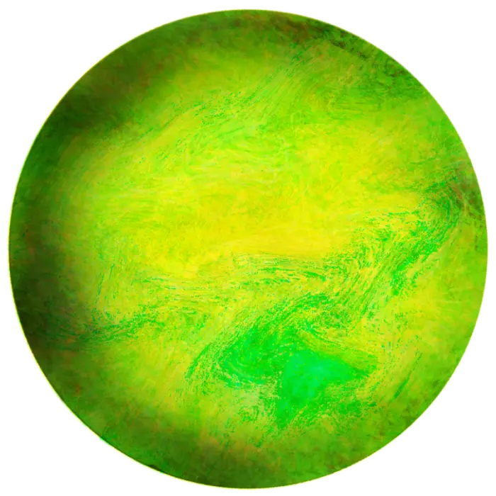

タウ・セチ e（Tau Ceti e） かつて「住めるかも」と注目された、幻の惑星候補
タウ・セチ e は、くじら座τ（タウ）星のまわりを回っていると、考えられていた惑星候補です。
主星までの距離は、地球と太陽の約0.54倍。地球より重いスーパーアースで、液体の水がありうる場所に近い、と注目されました（ ´ᯅ` ）
ただし、いまは「実在しない（誤検出だった）」と考えられています。このページでは、「消えてしまった惑星」として、その経緯をたどります。

1まず知っておきたいこと
タウ・セチ e は、実在が確認された系外惑星ではありません。NASA の系外惑星のデータベース（NASA Exoplanet Archive）は、2026年4月9日に、タウ・セチ e の扱いを「誤検出（False Positive Planet）」に変更しました。専門用語では、偽陽性とも呼ばれます。
| 項目 | 内容 |
|---|---|
| 英語名 | Tau Ceti e |
| 別名 | HD 10700 e |
| 主星 | タウ・セチ（τ Ceti、HD 10700） |
| 想定された分類 | スーパーアース |
| 検出方法 | 視線速度法 |
| 最初の提案 | 2012〜2013年（約168日の信号） |
| 再提案 | 2017年（約162.87日の信号） |
| 現在の扱い | 誤検出（2026年4月9日に変更） |
日本語では、「くじら座τ星」とも呼ばれます。「Ceti」の読み方には、「セチ」と「ケティ」があります。情報は、2026年11月20日ごろに確認したものです。
この「惑星候補」は、まだ「本物の惑星」と確認されていない天体、という意味です。あとの観測で、本物と確認されることもあれば、タウ・セチ e のように、別の原因による見かけの信号だったと分かることもあります。
2主星タウ・セチは、どんな星？
タウ・セチは、くじら座にある、太陽によく似た恒星です。太陽と同じG型の主系列星ですが、太陽より少し低温で、小ぶりで、暗い星です。
| 項目 | タウ・セチ | 太陽 |
|---|---|---|
| 別名 | τ Ceti、HD 10700 | — |
| スペクトル型 | G8〜G8.5 V | G2 V |
| 有効温度 | 約5,283 K | 約5,772 K |
| 質量 | 約0.8太陽質量 | 1 |
| 半径 | 約0.83太陽半径 | 1 |
| 光度 | 約0.5太陽光度 | 1 |
| 見かけの等級 | 約3.5等 | 約−26.7等 |
| 太陽系からの距離 | 約11.9光年 | — |
数値は、NASA Exoplanet Archive の恒星パラメータを中心にまとめた代表値です。研究によって、少しずつ値がちがいます。距離も、NASA の表では約11.75光年（約3.60パーセク）ですが、約11.9光年とする資料もあります。
約11.9光年は、恒星としてはかなり近い距離です。約3.5等の明るさがあるので、暗い空では肉眼でも見えます。近くて明るいため、古くから、惑星探しの対象として研究されてきました。
もうひとつの特徴は、金属量が少ないことです。天文学の「金属」は、水素とヘリウムより重い元素すべてのことで、鉄だけではありません。タウ・セチは、鉄の量が、太陽の半分以下ともいわれています。
32017年に推定された、惑星のプロフィール
2017年、Fengさんたちの研究チームが、タウ・セチの視線速度のデータを解析し直し、4つの周期的な信号を、惑星候補として報告しました。そのうち、約160日の周期の信号が、タウ・セチ e でした。
| 項目 | 2017年の推定値 |
|---|---|
| 想定公転周期 | 約162.87日 |
| 想定軌道長半径 | 約0.538 AU |
| 最小質量 | 約3.93地球質量 |
| 検出方法 | 視線速度法 |
| 想定分類 | スーパーアース |
これは、「歴史的な推定値」です。実在が確認された惑星の数字ではありません。
「最小質量」とは？
視線速度法では、惑星の重力で主星が引っ張られて、わずかに揺れる動きを調べます。でも、この方法では、惑星の軌道が、地球から見てどれくらい傾いているかが分かりません。
そのため、質量は、通常は次の形で求められます。
Mp × sin i
Mp は惑星の本当の質量、i は軌道の傾き（真上から見ると 0°、真横から見ると 90°）です。
- 軌道を真横から見ていれば、「最小質量」は本当の質量に近い
- 軌道を真上から見ていれば、本当の質量は、最小質量よりずっと大きい
だから、「3.93地球質量」は、「少なくとも、これくらいはある」という値です。タウ・セチ e が、実際にその質量だと確定した値ではありません。
たとえば、タウ・セチの塵の円盤が、真上に近い向き（傾き約35°、誤差±10°）に見えます。もし惑星の軌道も、円盤と同じ向きなら、本当の質量は約5.6〜9.3地球質量になります。ただし、これは「もしも」の計算です。
「スーパーアース」とは？
スーパーアースは、地球より重い系外惑星の分類名です。質量でおよそ地球の1〜10倍で、海王星ほど大きくはありません。
名前に「アース」とついていても、地球に似た環境という意味ではありません。岩石でできた惑星もあれば、厚いガスの層を持つ惑星もあるはずです。タウ・セチ e が、もし実在したとしても、岩石の惑星なのか、軽い物質に富んだ惑星なのかは、確かめられていません。
4軌道とハビタブルゾーン
タウ・セチ e が注目された、いちばんの理由がここです。
想定された軌道長半径は、約0.538 AU（天文単位）。地球より主星に近く、太陽系なら、水星（約0.39 AU）と金星（約0.72 AU）の間くらいです。でも、タウ・セチは太陽より暗い星なので、近くても、極端に熱くなるとは限りません。
ちなみに、ケプラーの法則を使うと、軌道長半径0.538 AUと、主星の質量（約0.78太陽質量）から、公転周期は約163日と計算できます。報告された「約162.87日」と、ほぼ同じです。
実際に受け取る光は、どれくらい？
受け取る光は、「主星の光度 ÷ 距離²」で比べられます。0.52 ÷ (0.538 × 0.538) ＝ 約1.8。つまり、地球が太陽から受け取る光の約1.8倍です。
この星で、液体の水がありうる領域（ハビタブルゾーン）の内側のふちは、いちばん楽観的な見積もりで、約0.55 AUあたり（地球の約1.7倍の光）です。0.538 AU は、そのふちの、ごくわずか内側にあたります。見積もりによって、入る、入らないが分かれる、「ぎりぎり」の場所だったわけです。
この「約0.55 AU」は、星の温度と光度から、目安として計算したものです。研究や、使うモデルによって、値は変わります。
ハビタブルゾーンとは？
惑星の表面に、液体の水が存在できる可能性のある、軌道の領域のことです。ただし、ハビタブルゾーンにいることと、生命がいられることは、同じではありません。実際の表面温度や気候は、次のような条件にも左右されます。
- 大気の組成と、大気の圧力
- 温室効果の強さ
- 雲の分布
- 惑星の反射率（アルベド）
- 自転の周期
- 海と陸の分布
- 惑星内部の熱の活動
2013年や2015年の研究でも、候補の e と f が、大気の条件しだいで、ハビタブルゾーンに入りうると議論されました。ただし、タウ・セチ e の信号そのものが否定されたので、「住める惑星がある証拠」としては使えません。
5どうやって「見つけた」のか
タウ・セチ e は、写真に撮って見つかったわけではありません。主星の動きから、間接的に「いるかもしれない」と推定されたものです。
視線速度法（Radial Velocity Method）
- 惑星と恒星は、お互いの重力で、共通重心のまわりを回っている
- 惑星は恒星よりずっと軽いので、恒星の動きは、ごくわずか
- でも、高精度の分光観測なら、そのわずかな動きを測れる
- 恒星が近づくとスペクトル線は波長が短くなり（青方偏移）、遠ざかると長くなる（赤方偏移）。このドップラーシフトから、視線方向の速さの変化が分かる
タウ・セチ e の場合は、約163日の周期で、くり返す速度の変化が、惑星の重力によるものと解釈されました。
もし本当に3.93地球質量の惑星があるなら、主星の揺れは、秒速0.5m前後（人がゆっくり歩く速さの半分以下）と計算できます。それくらい小さな揺れを測る必要があるのです。
この「秒速0.5m」は、視線速度法の標準的な式で計算した目安です。
どうして誤検出が起こるの？
恒星は、完全に静かな光源ではありません。表面では、次のような現象が起きています。
- 対流による、ガスの動き
- 黒点や、活動領域
- 恒星の自転
- 星の振動
- 磁気の活動
こうした恒星活動も、スペクトルを変化させます。そのため、惑星の重力による信号と似た、周期的な変動が、星のほうから生じることがあります。装置の誤差や、解析の方法によっても、惑星らしい信号ができてしまうことがあります。
特に、地球ほどの小さな惑星を探すには、とても高い測定精度が必要です。これが、タウ・セチ e のような、「小さな信号」の難しさです。
6発見から否定までの経緯
- 2012〜13年Tuomiさんたちの研究チームが、複数の観測装置のデータを解析し、タウ・セチに5つの惑星候補があるかもしれないと報告。このうち、約168日の信号が、のちに「e」と呼ばれる。研究チーム自身も、惑星由来かどうかには、慎重だった。
- 2017年Fengさんたちが、視線速度データのノイズを、波長ごとに分析する方法などを使い、約20日、約49日、約160日、約640日の信号を、4つの惑星候補として報告。約160日の信号が、タウ・セチ e（約162.87日）になった。
- 2024〜25年複数の研究で、これらの信号は、解析のくせや、主星の活動による見かけの変動かもしれない、と指摘される。
- 2025年Figueiraさんたちが、ヨーロッパ南天天文台（ESO）の超高精度の分光器ESPRESSOで、約5年間、2,400回以上観測したデータを解析。惑星の存在を裏づける信号は、見つからなかった。
- 2026年4月9日NASA Exoplanet Archive が、タウ・セチ e を「誤検出」に変更。惑星の一覧表から外れた（データは、システムの概要ページに残っている）。
2025年のESPRESSOの観測は、100日以内の周期なら、約1.7地球質量以上の惑星を、ハビタブルゾーンなら、約2〜5地球質量の惑星を、見つけられる感度がありました。タウ・セチ e（最小質量3.93地球質量）は、本当にいたなら、見えるはずだった、ということになります。
タウ・セチ系の、ほかの惑星候補は？
| 名前 | 公転周期 | 現在の扱い |
|---|---|---|
| タウ・セチ g | 約20日 | 議論あり |
| タウ・セチ h | 約49.41日 | 議論あり |
| タウ・セチ e | 約162.87日 | 誤検出 |
| タウ・セチ f | 約636.13日 | 議論あり |
NASA の一覧では、g、h、f は、「確認された惑星（議論あり）」として残っています。でも、2025年のESPRESSOの解析では、惑星の信号は見つかっていません。つまり、「タウ・セチには、4つの惑星がある」と言い切るのは、適切ではありません。
7塵の円盤（デブリ円盤）
タウ・セチには、もうひとつ、おもしろい特徴があります。それがデブリ円盤です。惑星ができたあとに残った、細かい塵や岩石、氷などが、主星のまわりを回っている構造のことです。
- 観測で、塵の円盤が見つかっている（2004年ごろ）
- ハーシェル宇宙望遠鏡の、遠赤外線の観測（2014年の研究）では、円盤はおよそ55 AUまで広がり、内側のふちは約1〜10 AUと推定された
- 塵の量は、太陽系の10倍以上
- ほぼ真上に近い向きに見えている（傾き約35°）
円盤は、惑星系がどうできて、どう変わってきたかを調べる、大切な手がかりです。ただし、円盤があることは、タウ・セチ e の存在の証拠にはなりません。塵の量や位置から、惑星の数や軌道を、ひとつに決めることもできません。
8生命はいる？
タウ・セチ e は、かつて、生命が住めるかもしれない惑星候補として、注目されました。でも、生命がいる証拠は、ひとつもありません。そもそも、惑星の存在自体が、否定されているからです。
もし将来、似た軌道に、本物の惑星が見つかったなら、次のような研究が考えられます。
- 惑星の半径と、密度の測定
- 大気があるかの確認
- 大気の中の、水蒸気や二酸化炭素の検出
- 表面の温度の推定
- 液体の水ができる気候かどうかの検討
- 大気の中の、生命に由来する物質の探索
特に大切なのは、大気の研究です。同じ軌道を回っていても、大気の性質しだいで、表面の環境は大きく変わるからです。なお、タウ・セチ e の大気や水を示す観測結果は、これまで得られていません。
9『プロジェクト・ヘイル・メアリー』との関係
小説『プロジェクト・ヘイル・メアリー』では、タウ・セチ e が、「Adrian」という名前の惑星として登場します。この図鑑でタウ・セチ e を調べるきっかけも、この作品でした。
ただし、作品の中の設定は、あくまでフィクションです。現実の観測では、タウ・セチ e は、実在が否定されています。そのことを知ったうえで、作品を楽しむのも、また良いものです（ ´ᯅ` ）
10この星の、正しい言い方
タウ・セチ e のことを書くときは、次のように区別すると、誤解が起きにくくなります。
| 書き方 | 判定 |
|---|---|
| タウ・セチ e は、地球の約3.93倍の質量を持つ | 避ける |
| 最小質量が、約3.93地球質量と推定された | 適切 |
| タウ・セチ e は、ハビタブルゾーンにある | 断定しない |
| 想定された軌道が、ハビタブルゾーンとの関係で注目された | 適切 |
| タウ・セチ e には、液体の水がある | 避ける |
| 惑星の実在は、現在は否定されている | 適切 |
11タウ・セチ e のまとめ
タウ・セチ e は、太陽系から約11.9光年の恒星タウ・セチのまわりに、あると提案された惑星候補です。2017年に、約162.87日の信号と、約3.93地球質量の最小質量が報告されました。軌道が、ハビタブルゾーンの内側のふちに近かったため、注目されました。
でも、その後の高精度の観測と解析で、惑星の存在を裏づける信号は得られませんでした。NASA Exoplanet Archive は、2026年4月9日に、タウ・セチ e を「誤検出」に変更しています。
タウ・セチ e で、特に押さえておきたいのは、この3点です。
- 実在が確認された惑星ではなく、いまは誤検出と考えられている惑星候補であること
- 「3.93地球質量」は最小質量で、ハビタブルゾーンも「ぎりぎり」の話であること
- 小さな惑星の探索では、主星の活動で、惑星に見える信号ができてしまうこと
幻になってしまった惑星ですが、「どう見つかり、どう否定されたか」は、系外惑星探しの難しさと、科学が自分で間違いを直していく姿を、よく教えてくれます。
数字の計算の意味は、ゆる計算解説にもまとめています。
もっと詳しく知りたい方のために、データと論文を置いておきます。
NASA Exoplanet Archive：Tau Ceti（英語） ↗
👤 この記事に出てくる人物
- Fengさん（Fabo Feng）（2017年の研究チーム）
- 天文学者です。2017年に、タウ・セチの視線速度のデータを解析し直し、4つの周期的な信号を、惑星候補として報告した研究チームの一人です。
- ヨハネス・ケプラー（ケプラーの法則の人）
- ヨハネス・ケプラー（1571〜1630）は、ドイツの天文学者です。惑星の動きについての「ケプラーの3法則」を見つけたことで知られていて、この記事では、公転周期と軌道の大きさの関係を考えるときに登場します。
- Tuomiさん（Mikko Tuomi）（2012〜13年の研究チーム）
- 天文学者です。2012〜13年に、複数の観測装置のデータを解析し、タウ・セチに5つの惑星候補があるかもしれないと報告した研究チームの一人です。
- Figueiraさん（Pedro Figueira）（2025年の研究チーム）
- 天文学者です。2025年に、超高精度の分光器ESPRESSOで、約5年間・2,400回以上観測したデータを解析し、惑星の信号は見つからなかったと報告した研究チームの一人です。
- ウィリアム・ハーシェル（ハーシェル宇宙望遠鏡の名前の由来）
- ウィリアム・ハーシェル（1738〜1822）は、ドイツ生まれのイギリスの天文学者です。天王星を発見し、赤外線という「目に見えない光」の存在を見つけた人物でもあります。
🔭 この記事に出てくる言葉
- 惑星候補（わくせいこうほ）
- 惑星らしい信号が見つかったものの、まだ「本物の惑星」とは確認されていない天体です。あとの観測で、本物と確認されることもあれば、見かけの信号だった（偽陽性）と分かることもあります。
- スーパーアース（すーぱーあーす）
- 地球より大きい惑星（質量でおよそ地球の1〜10倍）の分類名です。海王星ほど大きくはありません。地球と同じ環境、という意味ではありません。
- 光年（こうねん）
- 光が1年かけて進む距離のことで、時間ではなく距離の単位です。1光年は約9兆5000億km。「64光年」は、光でも64年かかる距離という意味です。
- 主星（しゅせい）
- 惑星がまわりを回っている、中心の星のことです。HD 189733 b にとっての「HD 189733」、TOI-1452 b にとっての「TOI-1452」のように、惑星ごとに決まります。
- 視線速度法（しせんそくどほう）
- 惑星の重力で主星がわずかに揺れる動きを、光のドップラー効果（波長のずれ）から測る方法です。惑星の質量を調べられます。
- ハビタブルゾーン（）
- 主星からのエネルギーの条件から、惑星の表面に液体の水が存在できる可能性がある領域のことです。「そこに生命がいる」という意味ではありません。
- 偽陽性（ぎようせい）
- 惑星ではないのに、惑星があるように見えてしまった信号のことです。「誤検出」ともいいます。恒星活動や、測定の誤差、解析のくせなどが原因になります。タウ・セチ e は、このように判断されました。
- 主系列星（しゅけいれつせい）
- 中心で水素の核融合をして輝いている星です。星の一生のなかで、いちばん長く安定している時期にあたります。太陽も、いまはこの段階です。
- スペクトル型（すぺくとるがた）
- 星の光を虹のように分けたもの（スペクトル）の特徴で、星を分類した名前です。O・B・A・F・G・K・M の順に、表面温度が低くなります。TOI-1452 の「M4〜M4.5 V」は、低温のM型星で、「V」は中心で核融合をしている星（主系列星）であることを表します。
- ケルビン（K）（）
- 温度の単位です。0 K ＝ −273.15°Cで、1 K の幅は1°Cの幅と同じです。たとえば TOI-1452 b の平衡温度「約326 K」は、約53°Cです。
- 太陽質量（たいようしつりょう）
- 天体の重さを表すための単位で、1太陽質量＝太陽1個分の質量です（約2×1030kg。地球の約33万倍）。「660億太陽質量」は、太陽660億個分の質量という意味です。
- 太陽光度（たいようこうど）
- 星の明るさ（光度）を表すための単位で、1太陽光度＝太陽1個分の光度です。「約38万太陽光度」は、太陽38万個分の明るさ、という意味です。
- 見かけの等級（みかけのとうきゅう）
- 地球から見たときの、天体の明るさを表す数字です。数字が小さいほど明るく見えます。TON 618 は約15.9等で、とても遠いので、暗い天体として観測されます。
- 金属量（きんぞくりょう）
- 星にふくまれる、水素とヘリウムより重い元素の割合です。天文学では、これらをぜんぶ「金属」と呼びます。鉄だけを指すわけではありません。金属量が多い星ほど、惑星ができやすい傾向がある、といわれています。
- 最小質量（さいしょうしつりょう）
- 視線速度法で分かる、惑星の質量の下限です。軌道の傾きが分からないため、本当の質量は、最小質量と同じか、それより大きくなります。タウ・セチ e の「約3.93地球質量」も、最小質量です。
- 軌道長半径（きどうちょうはんけい）
- 惑星の軌道（だ円）の、いちばん長い直径の半分の長さのことで、主星からの平均的な距離の目安になります。TOI-1452 b は約0.061 AU（天文単位）です。
- AU（天文単位）（てんもんたんい）
- 太陽系の天体までの距離を表すための単位です。1 AU ＝ 地球と太陽の平均距離（約1億5000万km）。たとえば海王星は、太陽から約30 AUのところを回っています。
- 公転周期（こうてんしゅうき）
- 公転で、ぐるっと一周するのにかかる時間のことです。惑星にとっての「1年」の長さです。地球は約365日、HD 189733 b は約2.22日、TOI-1452 b は約11.06日です。まけまけは約305年、ゴンゴンは約547年です。
- ケプラーの法則（けぷらーのほうそく）
- 天体の軌道について、ケプラーが見つけた3つの法則です。とくに第3法則は、「太陽のまわりでは、公転周期（年）の2乗が、軌道長半径（AU）の3乗に等しい」というもの。衛星の軌道から、中心の天体の質量を計算するのにも使われます。
- 反射率（アルベド）（はんしゃりつ）
- 惑星が、星の光をどれだけ反射するかを表す割合です。反射率が大きいほど、受け取る熱が減るので、温度が変わります。
- 共通重心（きょうつうじゅうしん）
- 2つの天体が、お互いの重力で回り合うときの、回転の中心になる点です。惑星は恒星よりずっと軽いので、共通重心は恒星のすぐ近くにあります。恒星が、この点のまわりを小さく回る「揺れ」を測るのが、視線速度法です。
- ドップラーシフト（ドップラー効果）（どっぷらーしふと）
- 光を出す天体が動くと、光の波長がずれる現象です。近づくときは波長が短く、遠ざかるときは長くなります。惑星の重力で主星が揺れると、主星の光の波長がわずかにずれるので、これを測るのが視線速度法です。
- 恒星活動（こうせいかつどう）
- 星の表面で起きる、黒点、フレア、対流、磁気の活動などの、まとめた呼び方です。星のスペクトルを変化させるので、惑星の信号とよく似た見かけの変動を作り、惑星探しの邪魔になることがあります。
- ESPRESSO
- ヨーロッパ南天天文台（ESO）の、チリにある超大型望遠鏡（VLT）に取りつけられた、超高精度の分光器です。視線速度を、秒速10cm級の精度で測ることをめざして作られました。
- デブリ円盤（でぶりえんばん）
- 惑星ができたあとに残った、細かい塵や岩石、氷などが、星のまわりを回っている円盤です。惑星系ができて、変わってきた歴史を調べる手がかりになります。タウ・セチのまわりにも、見つかっています。